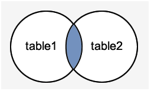
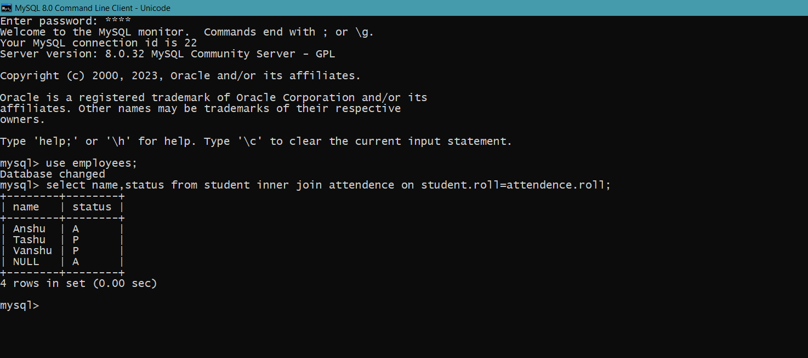

MySQL JOINS
MySQL JOINS are used with SELECT statement. It is used to retrieve data from multiple tables. It is performed whenever you need to fetch records from two or more tables.
- MySQL INNER JOIN (or sometimes called simple join)
- MySQL LEFT OUTER JOIN (or sometimes called LEFT JOIN)
- MySQL RIGHT OUTER JOIN (or sometimes called RIGHT JOIN)
MySQL Inner JOIN (Simple Join)
The MySQL INNER JOIN is used to return all rows from multiple tables where the join condition is satisfied. It is the most common type of join.

Syntax
SELECT columns
FROM student
INNER JOIN attendence
ON student.column = attendence.column;


Example
SELECT name,status from student inner join attendence on student.roll=attendence.roll;
